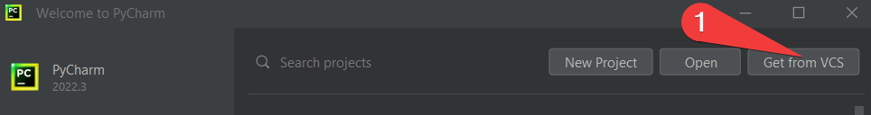

i164 - Créer des bases de données et y insérer des données - OM
i21-164-OM
ABSCENCE DE MACCAUD OLIVIER MODULE 164 DU 26.01.2023
Bonjour, ce matin je suis absent pour le Module 164.
Vous attendez à la cafétéria le cours suivant.
Il faut vous inscrire au nouveau module 164 sur le MOODLE. Vous devez me rendre votre cahier des charges comme demandé sur le MOODLE pour dans 2 semaines.
Belle journée.
Olivier Maccaud
MODULE 164 EXAMEN FINAL (07.06.2024 23h59)
Bonjour,
vous voici arrivés au moment le plus important de votre module 164.... LA FIN.
Tous les fichiers ci-dessous doivent se situer dans le répertoire "database" de votre projet.
- Votre cahier des charges en format PDF
- Le MCD, MLD en format PDF
- Le dictionnaire des données en format PDF
- Le dernier DUMP à jour de votre base de données
- Le nom de chaque fichier est dans le format utilisé au module 164 (nom, prénom, classe, sujet, module)
- Description de l'installation de votre projet. (readme.md)
- Les requêtes en SQL de vos CRUD de votre projet dans un fichier (nom, prénom, classe) ".sql"
Description de l'installation de votre projet. (readme.md)
- "Je suis le CLIENT... je récupère votre lien github...ou un dossier zip...comment je vais faire pour faire fonctionner votre projet"
- Vous devez décrire la marche à suivre en précisant les logiciels à installer.
- S'il existe des fichiers annexes indispensables au bon fonctionnement de votre projet, ne les oubliez pas !
- Le lien github de votre projet.
- Le fichier .zip de votre projet (sans le répertoire venv)
Ceci pour être certain que votre projet soit rendu dans les temps
et pour que je récupère en une fois tous les projets.
En cas de problèmes majeurs ou étranges, vous pouvez communiquer avec mon mail olivier.maccaud@eduvaud.ch
À bientôt dans les labyrinthes du temps de l'EPSIC.
Rendu MODULE 164 délai VENDREDI 07.06.2024 à
23h59
Ce fut un grand plaisir de vous rencontrer.
Bon travail et bonne suite à vous.
OM
MACCAUD : Rendu de votre projet.
Bonjour,
Ne pas déposer votre devoir ici vous vaudra une note de note de 1 (un) pour chaque semaine manquée.
Tout est expliqué dans le readme.md de mon projet de démonstration.
Voici la dernière version que vous devez télécharger grâce à ce lien : https://github.com/info164/164_OM_PYTHON_MYSQL_FLASK_EX_2_V1.git
MACCAUD : 2022.04.06 ATTENTION première évaluation intermédiaire. (MCD, MLD, MPD et requêtes)
Bonjour,
Vous devez rendre les "objets" suivants :
- VOTRE CAHIER DES CHARGES en format PDF (Sinon c'est
impossible de savoir ce que vous voulez faire dans votre
projet)
- Les fichiers MCD, MLD en format PDF
- Le DUMP de la base de donnée
- Les requêtes sur votre BD sont dans un fichier texte avec une extension .SQL
- Le nom de chaque fichier est dans le format utilisé au module 162 (nom, prénom, classe, sujet, module)
Bon travail et à bientôt.
OM
ps : cette évaluation vous donnera une idée de l'excellence ou de l'insuffisance de votre travail. Un travail non rendu fait l'objet d'une note de 1 (un).
(2023.03.29) PROJET COMPLET MYSQL, PYTHON, FLASK
Bonjour,
Prérequis:
- Python doit être installé.
- PyCharm doit être installé.
- Git doit être installé. (Tutos très nombreux sur
l'Internet)
- Ouvrir PyCharm. S'il y a des projets ouverts, il faut les fermer. (File->Close Project)
- Dans PyCharm il faut la fenêtre ci-dessous, selon les démos faites en classe il faut récupérer mon code avec PyCharm

Choisir un répertoire sur VOTRE disque dur LOCAL (ATTENTION !!! Pas de CLOUD drive.... ) il ne doit pas avoir le même nom que MON git.
Pour la suite de la démo, vous devez lire le readme.md directement dans PyCharm
MACCAUD : Cahier des charges de votre projet
Une nouveauté pour ce module 164 : toute demande de ma part sur
ce MOODLE est validée par un nombre de points. Cette décision est
prise car il y a trop de personnes qui n'ont pas même ouvert le
MOODLE pour le 162 de façon à parfaire leur dossier au 162.
Au module 164 on commence par le cahier des charges qui vaut 10 points. Vous n’êtes pas obligé de le "dire" à vos camarades, mais l'effet de groupe devrait encourager la communication. Il ne sera plus possible de prendre le travail d'une autre personne, puisque chaque projet est individuel. Donc votre seule possibilité est de travailler ensemble sur des sujets différents et ainsi vous allez découvrir le bonheur de la vie professionnelle.
Donc vous devez faire le cahier des charges de votre BD, celle
qui va gérer les données de votre sujet. Après avoir conçu et
testé votre BD, on va construire une interface utilisateur en
HTML de façon à pouvoir introduire des données dans la BD. Le
code de cette partie vous sera d'abord imposé.
Le nom de votre fichier pour le cahier des charges doit être: nom_prenom_classe_cahier_charges.pdf
Si le fichier n'est pas au format PDF il ne sera pas ouvert, donc le résultat de cette première évaluation sera de 0 point.
Comment écrire votre cahier des charges.
- Votre nom, prénom, date, sujet
- Description générale du sujet.
- Après la fin de votre projet, qui va utiliser votre "site" avec votre base de données.
- Il faut que votre sujet soit "UTILE" à une autre personne que
vous, c'est la garantie d'atteindre "l'excellence" dans ce module
164.
- Qui va entrer les données dans votre base de données par l'intermédiaire de votre interface utilisateur ?
- OBLIGATION de reprendre la partie gestion des utilisateurs du
module 162 (Contacts). Je vais donc revenir sur la partie BD du
module 162.
- Plus vous écrivez sur votre sujet mieux vous allez le
comprendre et le cerner.
- Je me donne le droit de REFUSER votre sujet. Vous devrez rechercher un sujet jusqu'à ce que je le valide. L'inconvénient c'est que vous prendrez du retard sur la conception de votre BD.
- Donc il faut interroger vos proches, votre entreprise, vos associations, que bref.... le monde réel "UTILE" doit vous aider à trouver VOTRE sujet.
Le rendu se fait ci-dessous grâce à un dépôt comme au module précédent.
Bon travail.
ps: il faut donc commencer un MCD en brouillon sur votre BD
- Cahier des charges de votre projet 164 (09.02.2024) (Devoir)
- Cahier des charges de votre projet 164 MCD (09.02.2024) (Devoir)
- (En format pdf : Cahier des charges, mcd, mld), MPD (MySql) 164 (09.03.2024) (Devoir)
Le projet "gestion des genres de films" (2024.03.27)
Bonjour,
pour ce qui concerne la suite du module je suis à votre disposition par mail, si vous avez des questions.
Pour utiliser ma démo et la copier, puis l'adapter, il faut suivre le mode d'emploi à cette adresse :
https://info164.github.io/doc164ver1/index.html
À très vite.
OM
CAHIER DES CHARGES/MCD/MLD/MPD 01.03.2024
Pour le 1.3.2024
Il faut faire le MLD....
Faire le MPD total.
Tous les documents en pdf.
Le MPD en MySql. (Attention au DROP DATABASE... et testez votre code MySql sur d'autres ordinateurs)
Vos fichiers doivent toujours avoir comme noms "nom_prénom_classe_sujet"
....
La suite ... fin mars...il faut insérer des données, pour tester votre modèle de BD.
Il faut TOUTES les requêtes dans un fichier MySql afin que votre BD soit forte, car sans test vous aller faire un site en HTML qui ne sera pas terrible.
LOGICIELS à installer pour le module 164
Vous devez installer les logiciels suivants pour vous préparer à l'enfer des données.
UWAMP (https://www.uwamp.com/file/UwAmp.exe) si problèmes (https://www.uwamp.com/fr/?page=download)
Si impossible à faire fonctionner, télécharger le zip et décompresser-le dans un répertoire. Puis double-clic sur UwAmp.exe (https://www.uwamp.com/file/UwAmp.zip)
Tester : utilisateur root Mot de passe : root
Python : https://www.python.org/downloads/
Pycharm : https://www.jetbrains.com/fr-fr/student/
Bon courage
Début de l'initiation au langage Python (avec du Mysql)
Git, Github, Gitlab, Introduction.
Autrefois dans le module 100, vous deviez connaître git et github.
Maintenant il faut l'utiliser et cela demande un petit peu de temps pour lire et regarder des tutos, mais cet investissement vous sera rendu au centuple plus 3 chameaux (essayez au moins de tester pour avoir les 3 bestioles !!!)
Le tuto pour tout faire
https://openclassrooms.com/fr/courses/1233741-gerez-vos-codes-source-avec-git
Le tuto pour faire un peu mais pas trop
https://rogerdudler.github.io/git-guide/index.fr.html
Mais...euuuh le meilleur tuto ce sont les commandes que vous laisserez dans votre mode d'emploi...comment vous sauvegarder sur github etc etc...pour des raisons politiques j'aime mieux "gitlab" héhé
Celui-ci est assez bien, mais il faut du temps...hé oui !!!
(n'oubliez pas vos bestioles)
Et si vous voulez faire PETER le plafond de verre. (Interdit aux
moins 42 ans)
A vous maintenant !
PyCharm IDE
phpMyAdmin (11.02.2021)
Installation de FLASK
PyCharm et GITHUB
Faire un compte GITHUB et apprendre à l'utiliser avec PyCharm.
C'est une fois de plus votre pratique qui fera de vous des personnes compétentes.
Il y a beaucoup de vidéos sur l'Internet qui expliquent comment lier PyCharm et Github
Après avoir configuré un compte Github
Il existe aussi un descriptif de JetBrains